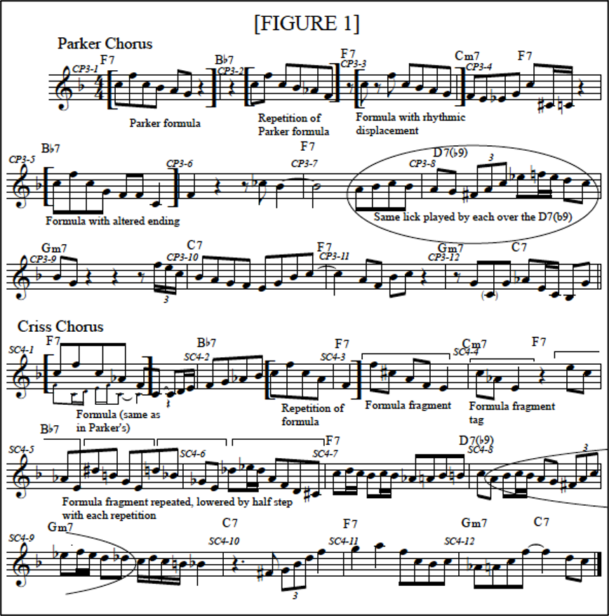
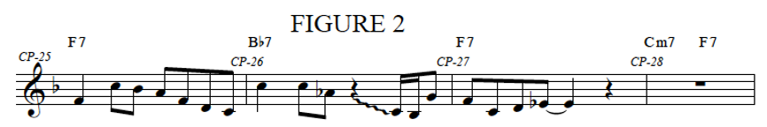
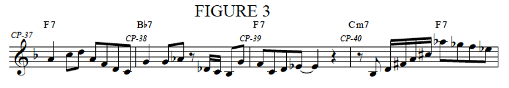
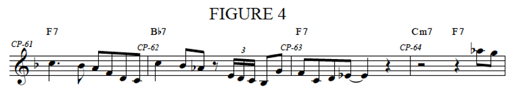
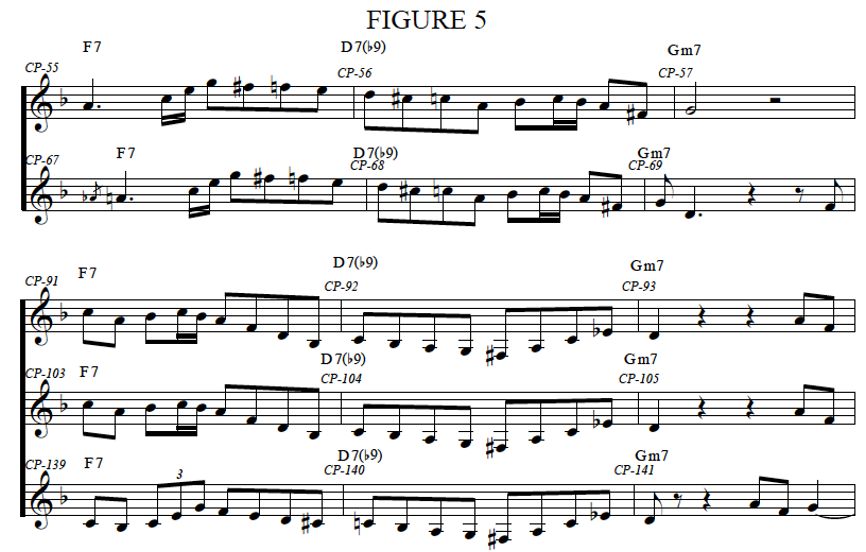

Comparing Charlie Parker and Sonny Criss on ‘The Squirrel’
Charlie Parker left an imprint with his improvisational style that was unavoidable for any alto saxophonist that came after him. Many saxophonists are scrutinized for sounding too much like Parker. In fact, players like Sonny Stitt and John Coltrane went so far as to switch to tenor before they ceased sounding like Charlie Parker impersonators.[1] It is fascinating to hear Parker play with one of his disciples, especially when they are playing the same horn. For this paper, I will be comparing the playing of Charlie Parker to one of his followers, Sonny Criss.
Sonny Criss was an alto saxophonist who was heavily influenced by Parker in the late 1940s. While Criss would eventually find his own style, during the beginning of his career he sounded very similar to Parker. The two are recorded together on two occasions; the first was a Jazz at the Philharmonic performance at Carnegie Hall in 1949, and the second was a live recording from a venue called Trade Winds in Inglewood, California.
Of the two recordings, the better known seems to be the Inglewood jam session where Chet Baker joins them on trumpet, Russ Freeman and possibly Al Haig on piano, Harry Babasin on bass, and Lawrence Marable on drums. The session consists of four songs: “The Squirrel,” “Irresistible You,” “Indiana,” and “Liza.” I have chosen Tadd Dameron’s “The Squirrel” as the vehicle for my comparison since it is a blues in F, which would have been a familiar form and key for both players.
Upon listening to the track, it is noticeable that Parker and Criss both have similar stylistic conceptions for their solos. Both players use patterns, descending eighth note scale lines, arpeggios, double-time figures, and use the eighth note line to propel their solos forward. Despite the similarities to both of their approaches, there are plenty of aspects of Parker’s playing that make it sound more authentic than Criss’s improvisations. This is not a novel observation regarding Parker’s playing in comparison to those he immediately influenced. In ardbird Suite: A Compendium of the Music and Life of Charlie Parker, Lawrence Koch notes Parker and Criss’s playing during this session:
A striking comparison can be made between Parker and Criss, then a young Bird disciple. Parker’s mastery of rhythm in his inventions is not present in Criss’s work. Criss mainly alternates strings of eighth notes with rifflike figures and is often rhythmically repetitive in his phrasing. This same problem was present with many of the Bird-schooled alto players of the period; they grasped much of the essential sound of Parker’s music but failed to assimilate the rhythmic subtleties (which was a large part of Bird’s genius).[2]
Koch’s remarks about Sonny Criss’s playing seem harsh, but they receive ample support when comparing the two saxophonists’ transcribed solos. In Figure 1, a chorus of Parker improvising is compared to a chorus of Criss improvising. This happens towards the end of the track when Criss, Baker, and Parker are trading choruses. In these two choruses, Parker and Criss are very similar for a few reasons: they both start their solos with the same formula, they both go on to develop the formula, they both use the same formula over the D7(b9) chord (both play the same formula over D7, but this formula is different than the one used to open each of their choruses), and they each use the eighth note line to drive their solos forward.

To begin examining the differences between the two, look at the way each player develops the initial formula (the formula and its repetitions are bracketed. On Criss’s chorus, partial repetitions are bracketed at the top). In Parker’s solo, notice that he plays the formula starting on beat one of measure one, then rests for two beats before repeating the formula on beat two of measure two. The second time he plays it, he changes the A to and A-flat to better fit the chord. Parker subtly varies the rhythm of the formula the third time he plays it by starting it on the “and” of beat one of measure three, and puts an eight rest between the first and second note of the formula. Parker also adds a string of eighth notes to the end of the formula to finish the phrase. On beat one of measure five, Parker plays the formula one more time to start the second four-bar hyper-measure. Parker’s development of his formula is rather subtle rhythmically as well as melodically. In the first repetition, only one note is changed; on the second repetition, none of the notes are changed, though notes are added as an extension; the last time Parker plays the formula, the ending is slightly changed.
Compared to Parker, Criss’s development of the formula is about as subtle as a gunshot. On beat one of Criss’s first measure he plays the formula, though he changes the last three notes. On beat three of the next measure Criss repeats the formula, this time ending on a quarter note on beat one of measure three. On beat two of that same measure, Criss plays a fraction of the formula. By removing the first note, the formula becomes a descending arpeggio. Criss also changes the intervals of the arpeggio, making it an augmented triad (enharmonically spelled) followed by a half step, ending on E. On beat one of measure four, Criss tags his formula fragment with a descending augmented triad, ending on E again. Starting on beat four of measure four, Criss begins rapidly repeating his formula—an augmented triad followed by an E—and drops the augmented triad by a half step on each repetition. On beat two of measure six, Criss ornaments his final formula fragment with a mordent.
The next point of comparison between these two choruses is Parker and Criss’s treatment of the D7(b9) on the eighth measure of each chorus. Both players arpeggiate the D7(b9) with a triplet starting on the third of the chord (Parker starting on beat two of the measure), Criss starting on beat four. After the triplet, both saxophonists play an E-flat, an upper mordent, and follow with a descending eighth note line starting on a D. Furthermore, both players lead into the triplet with the same notes. Starting on beat three of measure seven, Parker plays six eighth notes before the triplet: A, B-flat, C, B-flat, A, and G. Criss plays those same six notes starting on the “and” of beat one on measure eight of his chorus, though the B-flat and second A are sixteenth notes.
These two choruses have a staggering number of similarities. However, focusing on the things these players did differently reveals why Parker is considered the master in this session and Criss is the tenderfoot. In Parker’s chorus, he gave the formula and each of its repetitions the same arching contour by starting on a C, followed by an F a perfect fourth above, and then returning to C before descending (usually stepwise). However, Parker developed the formula using slight variation in rhythm and note choice—the latter was previously discussed. Parker started the formula on a different place in the measure three out of the four times he played it, and on the third he used eighth rests to alter the rhythm.
One important difference between Parker and Criss’s playing here is their use of space throughout their entire choruses. Parker uses more rests between formulas and phrases to give his chorus a relaxed pace. After playing the formula in measure one, Parker rests for two beats before repeating the formula. He leaves an eighth note between playing it the second and third time, and leaves a quarter note at the end of the four-bar phrase. In measure six he rests for a beat and a half, two and a half beats in measure nine, and a beat and a half between measures 11 and 12. Criss, on the other hand, leaves hardly any rest throughout his entire chorus. He starts playing on beat one of measure one and does not rest until beat three of measure three. Following this rest, Criss plays a long string of eighth notes from beat four of measure four until resting for a dotted quarter starting on beat one of measure ten. Until ending the phrase with a quarter note, Criss’s run-on line contains nothing larger than an eighth note. However, this line contains several mordents: beat two of measure six, beat one and again on beat two of measure seven, beat two of measure eight, beat one and finally beat three of measure nine.
This comparison shows that Parker breaks up his lines using rests, while Criss favors to break the eighth note line with ornaments. I would argue that this comparison demonstrates Parker’s maturity as a player for two reasons. First, as was previously mentioned, the use of space gives Parker’s playing a more relaxed sound, as though his ideas are clear and easily transmitted through the horn. Second, this shows that Parker learned a valuable lesson that Criss had not: excessive ornamentation of your lines does not mean they will sound more interesting. Due to Criss’s disregard for space between his phrases and penchant for playing fast notes, his playing in this chorus and throughout the recording sounds hurried and uncertain. Criss’s playing is reminiscent of a modern student’s playing. This makes sense since many players were struggling at first to learn the advanced ideas presented in Parker’s music.
Further examination of each saxophonist’s use of space yields interesting results. To continue this analysis, the rests in each of their transcribed solos were counted. In Criss’s extended solo he rests for one beat or more 18 times over the course of eight choruses. Interestingly, Criss rests for at least a measure ten times over those eight choruses. Looking at Parker’s extended solo, he rests for at least one beat 47 times over 12 choruses, only eight of which are a measure or more. With this information, one could argue that Criss uses rests more as a way to search for ideas while Parker utilizes rests to break up his lines.
In order to further analyze what devices Parker and Criss use to break up their lines, a list of each of the saxophonists’ descending scale lines can be found here. Investigating Criss’s lines shows he uses a lot of chromatic passing tones, which is not abnormal for a bebop player. Not surprisingly, Criss also heavily uses mordents to break up his eighth note lines. Out of 24 descending scale lines, 17 feature mordents as a way of varying his lines. A few of Criss’s lines that do not descend the scale in eighth notes depend on rhythmic repetition for their flow; the line labeled SC2 starts with an eighth note on beat two of the pickup measure followed by two tied eighth notes. After this, the line continues with a pattern of two descending eighth notes followed by two tied eighth notes. The line labeled SC4 relies on a series of neighboring and descending triplet figures. By repeating these rhythmic figures throughout the course of the line, I believe their impact is lessened. These rhythmic devices could have been used as a way of creating unpredictability within the eighth note line, but Criss squanders this opportunity by repeating them so many consecutive times that they become predictable patterns. The SC4 line also begins with a held out note. This is a device that appears in a few of Criss’s lines (SC10 and SC14), and it seems as though Criss is using these long tones to mentally regroup and prepare for his next move.
Parker’s descending scale lines are broken up in more diverse ways than Criss’s lines. While he still employs a fair number of mordents—17 out of 38 of Parker’s lines use them—he does not rely on them nearly as much as Criss. Parker also uses devices not seen in Criss’s playing. Looking at the line labeled CP1, Parker starts on the “and” of beat three in the pickup measure with a chromatic descending line; on beat one of measure CP-15 he plays a C and an A to enclose the B-flat mordent on beat two. On beat three Parker breaks up the scale line with a descending arpeggio, ending the measure on a C. On beat one of the next measure he leaps up a fifth to a G mordent, plays an E-flat on beat two, leaps down to a G on the “and” of two, arpeggiates up to a D, and finally goes stepwise down to B-flat to complete the scale. This example alone shows a more diverse way of altering scale lines than seen in Criss’s playing, and it is only the first example. In the line labeled CP3 Parker repeats a figure from CP1: on beat three of the first full measure, Parker again uses C and A eighth notes to enclose a B-flat mordent. Later in the line, Parker outlines the D7(b9) chord, starting on the third and apreggiating to the ninth. Looking at the last few notes of CP3, it is interesting that Parker ends the phrase by descending the scale in thirds. I find this interesting because it is a scale pattern that Parker only uses for a few beats as opposed to Criss’s lines which uses scale patterns for multiple measures when they appear. Another interesting scale line is CP8, in which Parker starts his eighth note line off the beat on an A-flat and descends to an F before taking a quarter rest. He then continues his line with an E-flat mordent, moving down to a B-flat. Parker takes another quarter rest before ending the line on an A. Again, this shows that Parker does not rely on ornaments alone to disrupt his flow of eighth notes. On the contrary, he was able to make his line more interesting by resting and not playing anything. Using these many devices creates much more interest in Parker’s lines than is seen in Criss’s.
Parker’s Achilles heel in this analysis is arguably his over-reliance of certain formulas. Looking at Parker’s extended solo, significant similarities can be seen by comparing first four measures of the choruses starting on CP-25 (Figure 2), CP-37 (Figure 3), and CP-61 (Figure 4). Notice Figure 2 and Figure 3 both have the same rhythms, the same pick-ups to the third measure, and both of the patterns’ third measures are identical. The third measure and its pick-up in Figure 4 are also the same, and Figure 4 has a similar rhythmic structure in the first and second measures.



Parker’s formula repetition is possibly at its worse when looking at his treatment of the D7(b9) chord, since there are hardly any formulas that are seen only once over the chord. Some are slightly varied, like the pattern seen in CP-20 and CP-32, however, as shown in Figure 5, many are completely identical.

The top two staves of Figure 5 show Parker’s playing from the seventh to the ninth bars of two consecutive choruses: from measure CP-55 to CP-57, and CP-67 to CP-69. Note how every note is the same except for the grace note at the beginning, and leap down by perfect fifth at the end of the second staff. Other than that, every note and every rhythm is identical. The bottom three staves show a different formula. The examples starting on CP-91 and CP-103 are completely identical, while the last example keeps the same approximate rhythms for the first measure before. However, the second measure of the last example is identical to the two previous examples. Furthermore, the bottom three examples arpeggiate the D7(b9) starting on the F-sharp up to the E-flat, which is a pattern that has already been discussed in other parts of Parker’s solos.
The influence of Parker on Criss’s playing is a relatively simple matter to pinpoint. Criss was a known follower of Parker’s playing early in his career, so Criss’s playing is riddled with Parker’s ideas. A great show of respect for Parker is shown in Criss’s opening statement when he pays homage to his idol by quoting Parker’s “Billie’s Bounce” solo from his famous 1945 recording. Looking at how Criss influenced Parker’s playing on this session is a more difficult task. However, upon inspection, Criss’s aforementioned overuse of mordents may have rubbed off on Parker. While Parker does not use nearly as many as Criss, he still seems to be using mordents a lot on this recording. It is hard to argue with any sense of certainty without providing examples from other live recordings from around this time, but he seems to be using more than he usually does. Other than that, I argue that Parker’s playing does not seem changed by the presence of Sonny Criss.
Parker’s original style was influential on scores of musicians that came after him, including some of the most distinct voices in jazz.[3] An argument could be made that the vast majority of instrumentalists since 1945 who have developed their own voice in jazz first had to absorb the essence of Parker’s playing. In fact, Sonny Criss would develop a style much more removed from Parker than this session suggests. The information I have found analyzing Parker and Criss’s performances supports Lawrence Koch’s claim that “Parker’s mastery of rhythm in his inventions is not present in Criss’s work.” The comparison of their playing provides much insight to how Parker’s playing stands above the playing of his imitators. While a lot can be learned of Parker’s genius by analysis of his solos alone, the point is magnified when measured against the playing of another soloist.
[1] In the few recordings featuring Coltrane playing alto, the influence of Charlie Parker can be heard along with influence from other alto saxophonists: Johnny Hodges and Benny Carter.
[2] Lawrence Koch, Yardbird Suite: A Compendium of the Music and Life of Charlie Parker, (Boston: Northeastern University Press, 1999), 262.
Players like John Coltrane, Miles Davis, Dexter Gordon, Sonny Rollins, Rudresh Mahanthappa, and many others cited Parker as an influence.